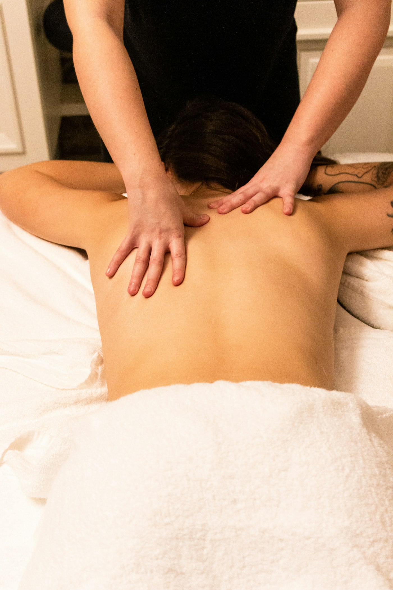
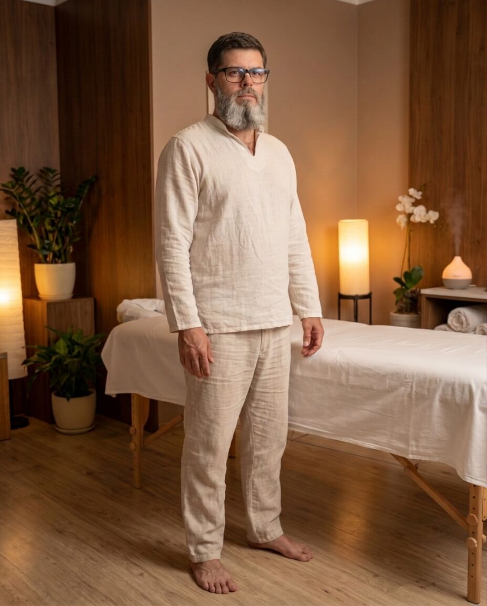
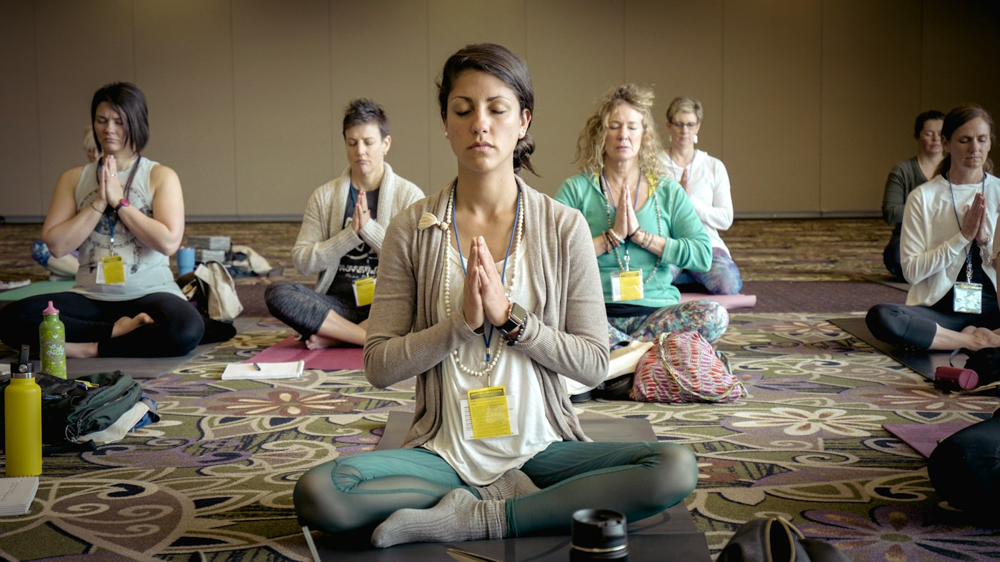
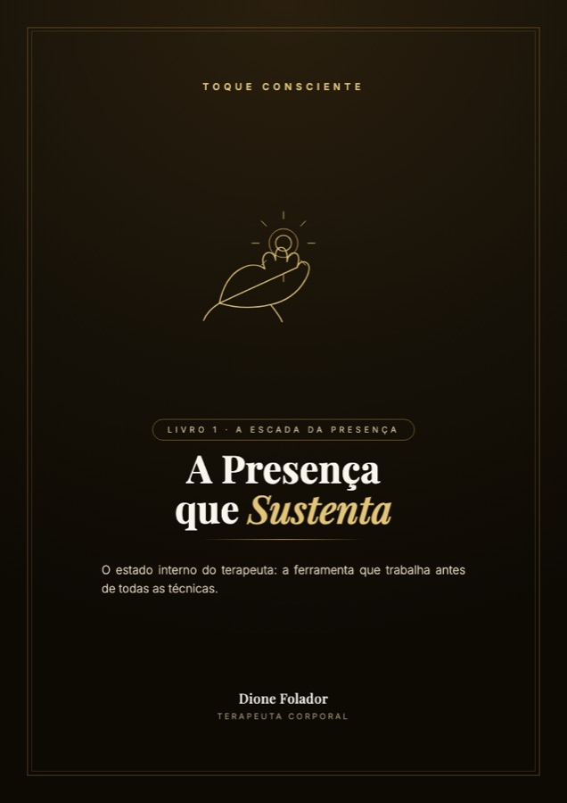
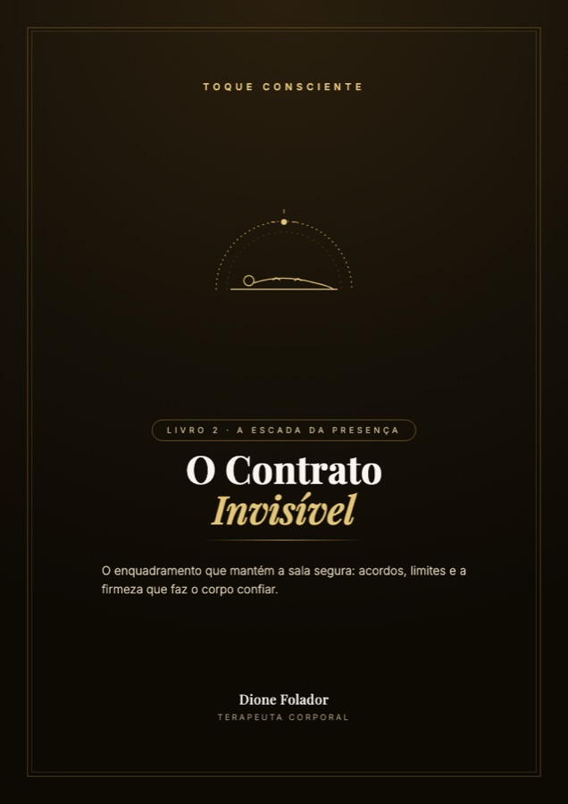
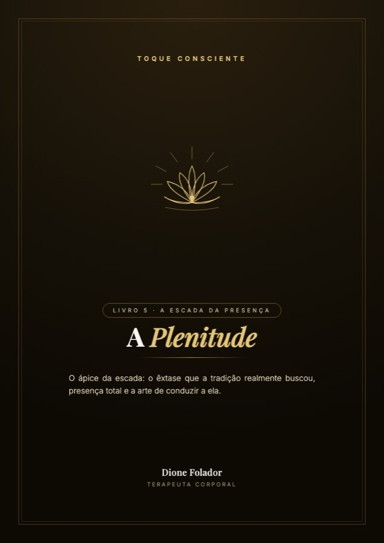
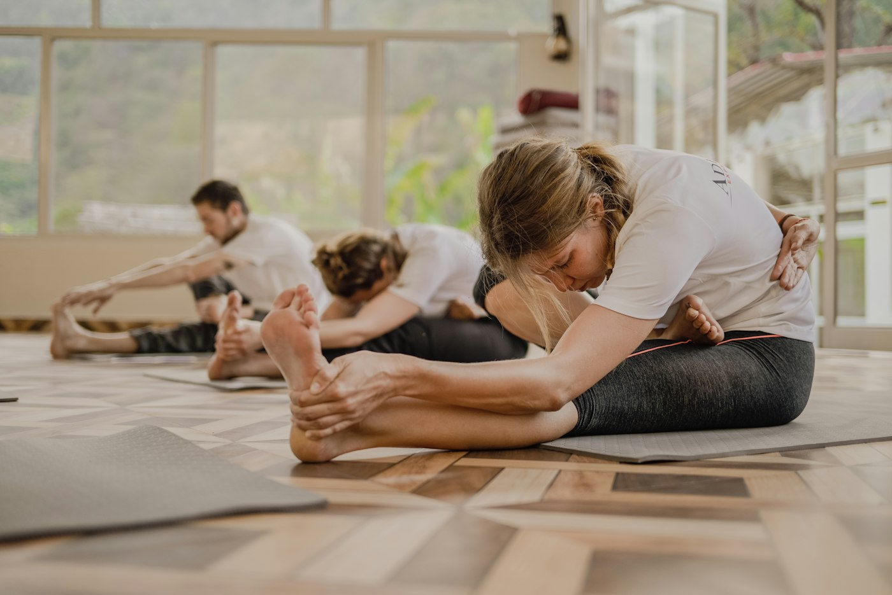

Ebooks
Cinco livros digitais em sequência, escritos para quem atende. Leitura direta, com protocolos passo a passo para aplicar na maca.
Ver ebooks →Ebooks de terapias corporais com técnica aprendida na fonte: certificações internacionais na Estônia e na Tailândia, traduzidas em um método claro, seguro e aplicável desde a primeira sessão.
O Toque Consciente reúne materiais de terapias corporais que unem o rigor técnico da massoterapia moderna à sabedoria das tradições do Oriente. Aqui, o toque não é sequência decorada: é presença, leitura corporal, bioenergia e método.
A abordagem integra massagem terapêutica, trabalho energético, respiração e mobilidade assistida em uma leitura em sequência: do estado interno do terapeuta à condução de uma sessão completa.


Cinco livros digitais em sequência, escritos para quem atende. Leitura direta, com protocolos passo a passo para aplicar na maca.
Ver ebooks →Consciência corporal, bioenergia, chakras e Linhas Sen: a ciência e a ancestralidade organizadas em um método com critério e segurança.
Entender o método →
Três cursos completos em apostilas digitais, da base à formação de instrutores. Em preparação, em breve aqui no site.
Ver o que vem →O terapeuta é a primeira ferramenta. Centramento, respiração e escuta tátil antes de qualquer manobra.
Protocolos passo a passo, critério de segurança e biomecânica correta. Nada de intuição vaga.
Chakras, bioenergia e Linhas Sen aprendidos na fonte, ensinados com honestidade e os pés no chão.
Kung fu, tai chi e as terapias corporais são práticas que cultivo por paixão, nas horas que reservo para elas. Movimento, respiração e presença são a base do toque que eu ensino.
Antes de colocar as mãos em alguém, o terapeuta aprende a sustentar o próprio corpo. É isso que você encontra nos materiais.
Eu não aprendi só por livro. Estudei terapias corporais e trabalho energético em formação internacional na Estônia, em uma escola de referência na área, e fui à Tailândia me certificar em massagem tradicional tailandesa (Chiang Mai, 2005; Bangkok, 2013; e Ko Samui, 2022).
Meu trabalho é com assessoria e mentoria em cripto e investimentos. As terapias corporais são o meu hobby sério, das horas vagas. Ensino aqui o que estudei e pratico, sem prometer o que não posso cumprir.
Tensão acumulada, respiração curta e dor crônica quase nunca são só físicas. O toque bem treinado é um caminho que a conversa sozinha às vezes não alcança.
Escritos para terapeutas e massoterapeutas. Cada livro prepara o seguinte.

O estado interno do terapeuta: a ferramenta que trabalha antes de todas as técnicas.
Comprar no Hotmart
O enquadramento que mantém a sala segura: acordos, limites e a firmeza que faz o corpo confiar.
Comprar no Hotmart
A raiz do toque profundo: a tradição oriental, a energia vital e o ritmo que transforma técnica em presença.
Comprar no Hotmart
Despertar, mover e canalizar a energia vital com presença e ética.
Comprar no Hotmart
O ápice da escada: presença total e a arte de conduzir a ela.
Comprar no HotmartTrês cursos em apostilas digitais, em preparação. Ainda não estão à venda.

Fundamentos do toque, leitura corporal, anatomia sutil e descompressão emocional.
Saber mais →
Técnica tailandesa autêntica: trabalho tecidual profundo, yoga passivo e Linhas Sen.
Saber mais →
Didática avançada, dinâmicas de grupo e o negócio da mentoria.
Saber mais →Os ebooks são escritos para quem já atende ou está em formação, mas começam pelo que vem antes de qualquer manobra: postura, pressão, ética e presença. Se você está chegando agora, comece pelo Guia dos 7 Centros, que é grátis, e pelo Livro 1.
Os livros não ensinam sequência de manobras. Eles tratam do que quase nenhum curso cobre: o estado do terapeuta, o enquadramento da sessão, a respiração e o ritmo. É o que separa aplicar técnica de sustentar uma sessão.
Leitura não substitui prática com supervisão, e eu não prometo isso. O que o material escrito entrega bem é o critério: o que observar, em que ordem fazer e o que nunca fazer. Os livros trazem protocolos passo a passo e ilustrações para você levar para a sua prática.
Nem um, nem outro. A tradição descreve, a prática confirma, e eu ensino os dois lados com honestidade: o que é técnica manual mensurável e o que é a leitura energética da tradição.
Sim e não. Parte da minha formação vem da tradição tântrica, estudada na Estônia, e ela atravessa o método na forma de presença, respiração e trabalho energético. E não, não é sobre o que o senso comum imagina: tantra é uma tradição milenar de consciência através do corpo, e é com essa seriedade que ela aparece aqui. Explico em detalhe na página de Metodologia.
Um material direto sobre anatomia sutil aplicada à prática terapêutica: onde ficam os centros, o que cada um sustenta e como começar a trabalhá-los na maca.
PDF de 14 páginas. Baixa na hora, sem cadastro.
Cinco ebooks em sequência e um guia grátis para começar hoje.